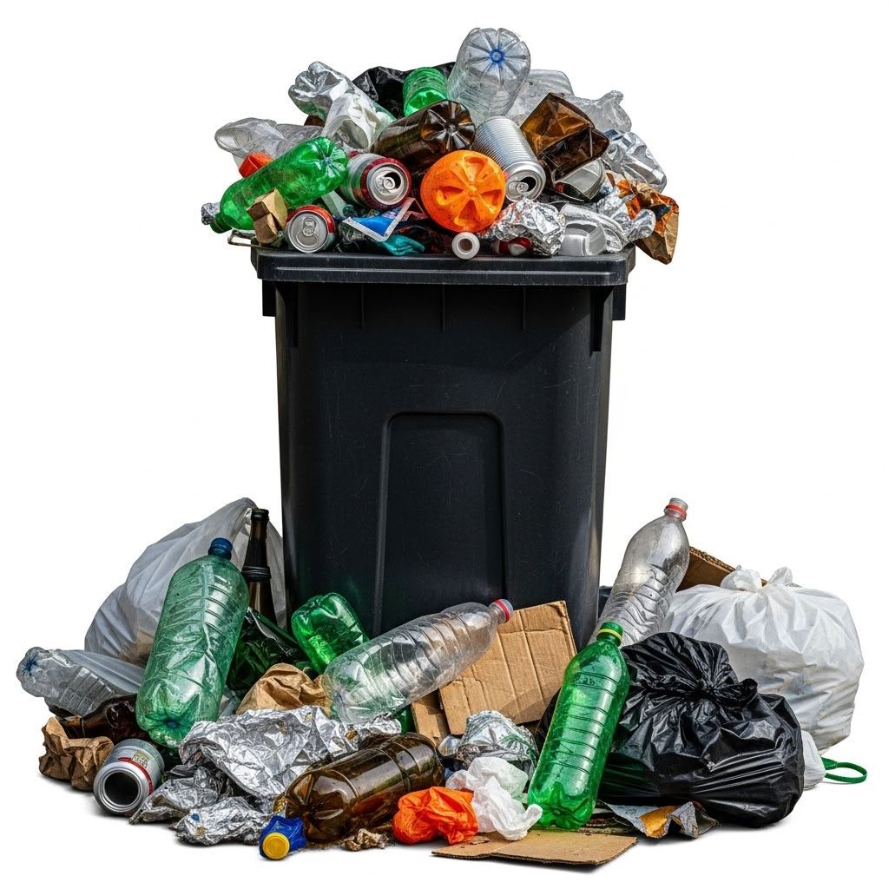
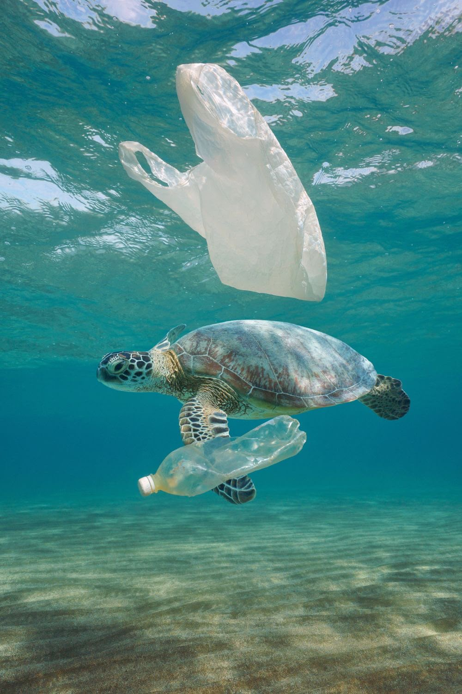
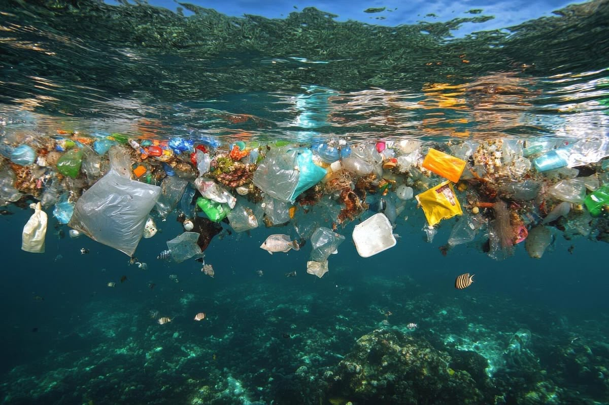
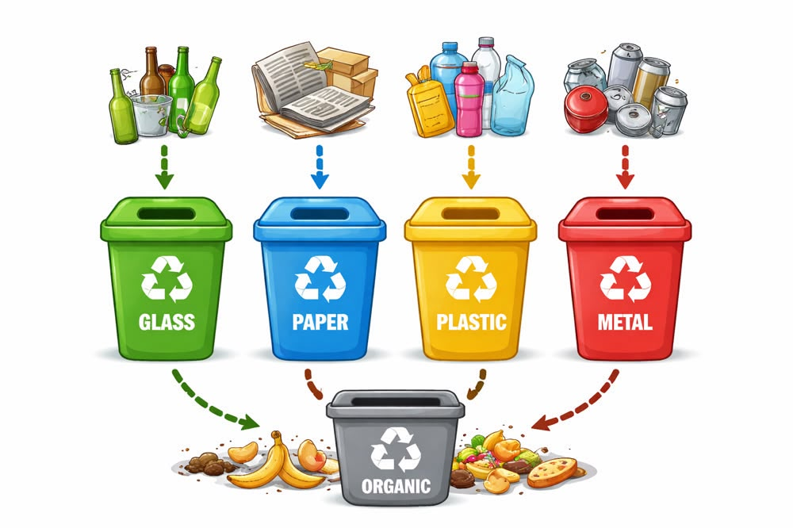
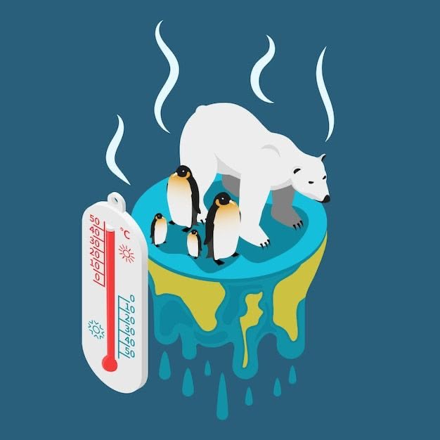
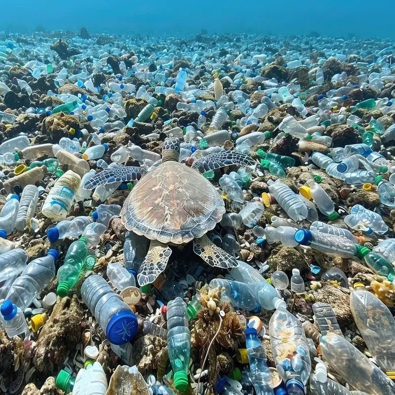
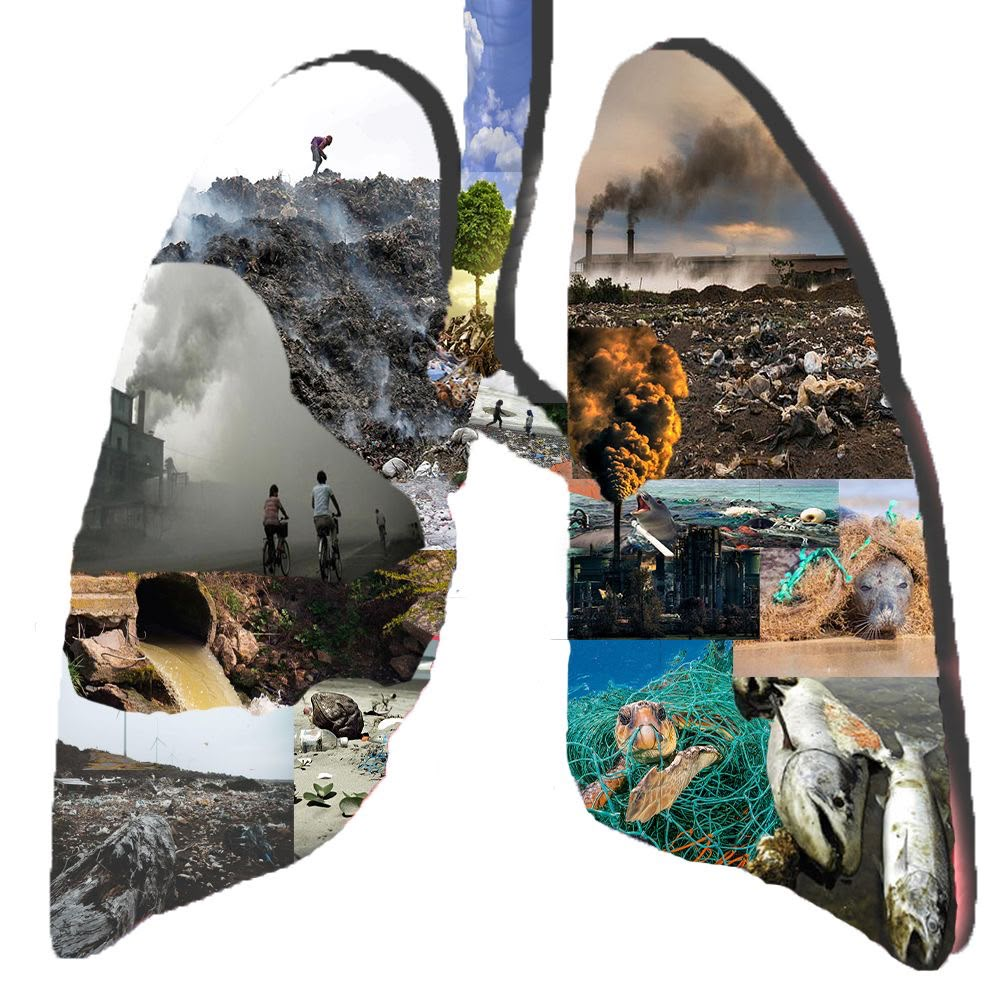
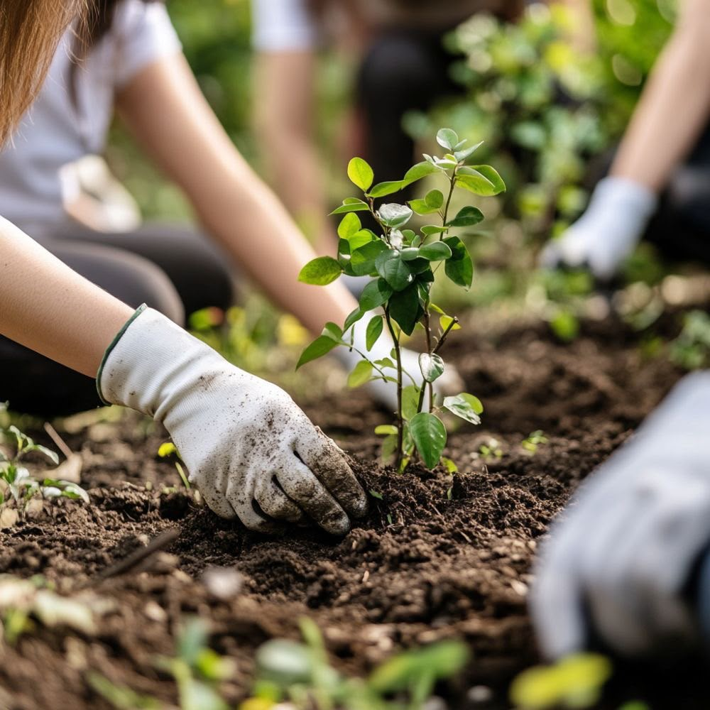
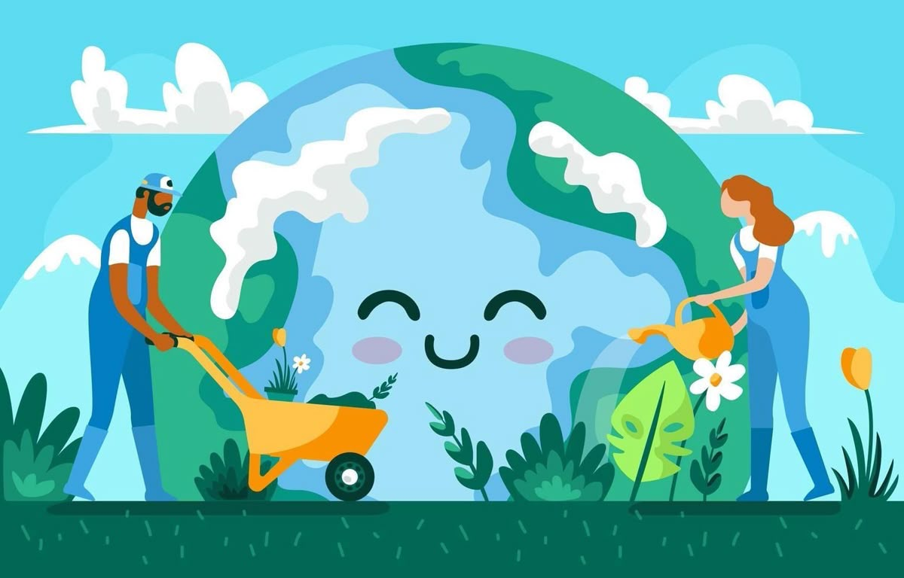

Un problema ambiental es cualquier alteración negativa que afecta el equilibrio natural del medio ambiente, generada tanto por causas naturales como, en su mayoría, por las actividades humanas. La intervención constante del ser humano sobre los recursos naturales ha modificado los ciclos naturales de la tierra, provocando daños que afectan la flora, la fauna, el agua, el suelo y el aire. A diferencia de fenómenos naturales como tormentas o sequías, la mayoría de los problemas ambientales actuales tienen un origen antropogénico, es decir, derivan de la contaminación, la sobreexplotación de recursos, la deforestación, la acumulación de residuos y el cambio climático. Reconocer la existencia de estos problemas es el primer paso para buscar soluciones sostenibles y reducir el impacto negativo que generamos en nuestro entorno.
Una de las causas más importantes es la contaminación, que se divide en contaminación atmosférica, hídrica, del suelo y acústica. La contaminación del aire se produce por emisiones de vehículos, industrias y quema de residuos; la contaminación del agua surge por vertidos de basura, desechos industriales y aguas residuales sin tratar; mientras que la contaminación del suelo aparece al depositar residuos sólidos o sustancias químicas sobre la tierra. Otra causa fundamental es la deforestación, ya que al talar árboles se pierden hábitats naturales, se reduce la absorción de dióxido de carbono y se favorece la erosión del suelo. También influyen la sobreexplotación de recursos naturales, el crecimiento desordenado de las ciudades y el consumo excesivo de productos de un solo uso.
Cuando tiramos la basura de forma incorrecta se desencadena una gran cantidad de daños para todo el ecosistema. Primero, los residuos se mezclan y contaminan el suelo, impidiendo el crecimiento de plantas y filtrando sustancias tóxicas hacia las capas subterráneas del agua. El agua contaminada llega a ríos, lagos y océanos, afectando gravemente a peces y demás animales acuáticos, muchos de los cuales pueden morir o acumular veneno en su organismo. Además, la basura mal depositada genera malos olores, atrae roedores, moscas y bacterias, aumentando la probabilidad de enfermedades en las personas. También se dificulta el proceso de reciclaje, ya que un solo residuo mal colocado puede arruinar todo un lote de materiales reciclables. En temporadas de lluvia, la basura obstruye alcantarillas y canales, provocando inundaciones que afectan viviendas y comunidades enteras.




Las consecuencias de los problemas ambientales son muy amplias y afectan directamente a todos los seres vivos. En el medio ambiente se produce la pérdida de biodiversidad, la extinción de especies, la desertificación, la alteración de ciclos hidrológicos y el aumento del efecto invernadero. Para la sociedad humana, estas alteraciones generan enfermedades respiratorias, cutáneas y digestivas, escasez de agua potable, desastres naturales más frecuentes y afectaciones económicas por daños a cultivos y viviendas. Los grupos más vulnerables suelen ser los primeros en sufrir estos efectos, ya que muchas veces no cuentan con recursos para adaptarse a los cambios generados por la degradación ambiental. Por ello, es indispensable actuar de forma inmediata para mitigar dichas consecuencias.



Existen múltiples soluciones que pueden aplicarse desde diferentes niveles: gubernamental, comunitario e individual. A nivel gubernamental se requieren leyes ambientales estrictas, control a las industrias contaminantes y programas de reforestación. A nivel comunitario se pueden organizar jornadas de limpieza, talleres de educación ambiental y campañas de separación de residuos. A nivel individual, cada persona puede contribuir reduciendo el consumo de plástico, ahorrando agua y energía, reutilizando objetos, reciclando correctamente y evitando la quema de basura. La combinación de todas estas acciones permite disminuir la gravedad de los problemas ambientales y construir un entorno más sano y sostenible para las próximas generaciones.

